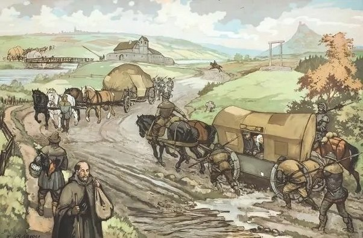

Transportul in Antichitate si Evul Mediu
Animale
În Antichitate și Evul Mediu, animalele au fost utilizate extensiv în transportul de mărfuri și persoane, jucând un rol crucial în mobilitatea umană și în dezvoltarea societăților. Iată câteva modalități în care animalele au fost folosite pentru transport în aceste perioade istorice:
Călărie: Călăria a fost una dintre cele mai frecvente și importante forme de transport în Antichitate și Evul Mediu. Oamenii călăreau cai, măgari, cămile și alte animale domestice pentru a se deplasa pe distanțe mai mari și pentru a-și îndeplini diverse activități, cum ar fi vânătoarea, agricultura sau călătoriile militare.
Tracțiunea animală pentru vehicule: Animalele au fost folosite pentru a trage diferite tipuri de vehicule pe uscat. Carul cu boi sau cai, căruța și alte vehicule similare au fost utilizate pentru transportul de mărfuri și pasageri pe drumuri și cărări. Aceste mijloace de transport au fost esențiale pentru comerț, pentru deplasarea militară și pentru transportul public în orașe și sate.

Transportul pe apă: Animalele au fost implicate și în transportul maritim și fluvial. De exemplu, galerele antice erau propulsate atât de rame manuale, cât și de roți de hamster acționate de sclavi sau soldați. Pe uscat, elefanții au fost folosiți pentru a trage tunuri de asediu sau pentru a transporta mărfuri grele.
Transportul de mărfuri: Animalele au fost folosite și pentru transportul de mărfuri pe distanțe mari și scurte. Cămilele și caii au fost folosiți pentru a trage căruțe și convoaie de mărfuri, facilitând comerțul și schimburile economice în întreaga lume antică și medievală.
Călărie militară: În plus, animalele au jucat un rol important în război și conflict. Călăria militară a fost utilizată pe scară largă în Antichitate și Evul Mediu pentru a spori mobilitatea și eficacitatea armatelor în luptă.